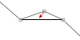

Editácia vzťahu
Ako sme si už ukázali, spojenie dvoch prvkov môže byť priame alebo rôzne zalomené.
Tvar čiary môčeme samozrejme meniť aj po jej vytvorení, pričom je možné:
- Pridávať body ... v mieste požadovaného zlomu ťaháme čiaru tak, aby sa vytvorilo zalomenie
- Presúvať body ... klikneme a ťaháme bod zlomu na novú polohu
- Odstrániť body ... bod zlomu presunieme tak, aby ležal priamo medzi susednými bodmi,
alebo ho presunieme do tesnej blízkosti k inéhmu zlomu

Poznámka:
Začiatočné a koncové body spojení sú nepresunuteľné a vždy smerujú do stredu prvku.
Popisky a kardinalita vzťahu
K väčšine spojení sa dá pridať popis určujúci o aký vzťah ide a ku niektorým sa dá doplniť
aj kardianalita a role objektov v danom vzťahu. Tieto popisky sa nastavujú v záložke "Vlastnosti".
Poznámka:
Pozícia popiskov sa dá meniť tak, že označíme spojenie a potom ťahaním
presunieme daný popisok na požadovanú pozíciu.